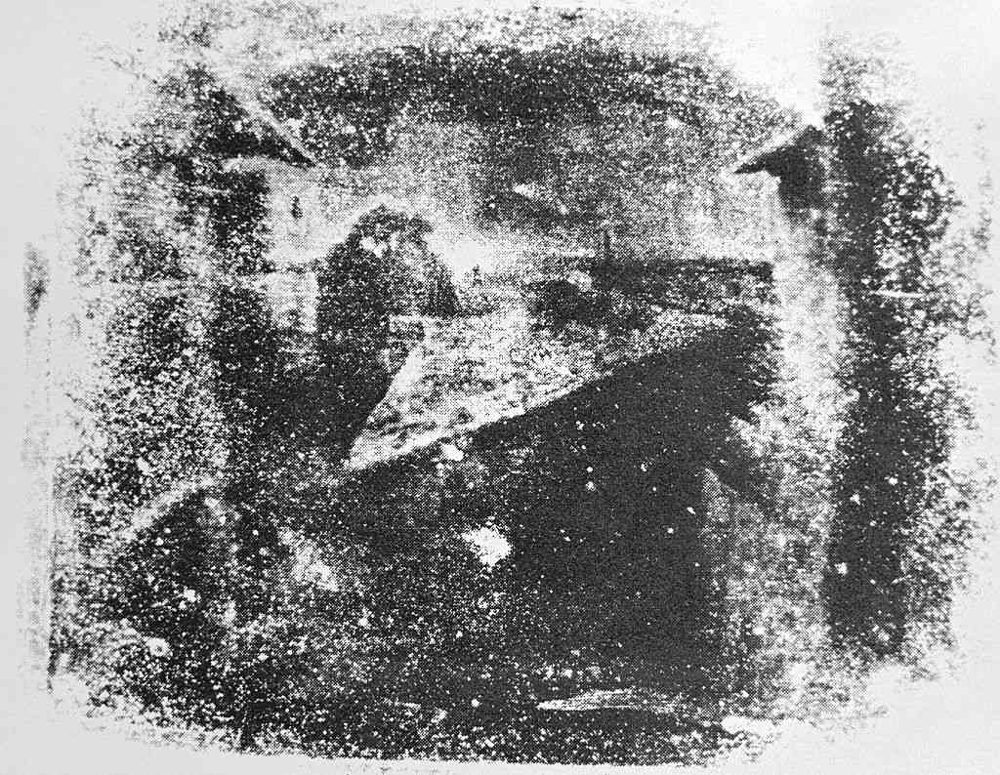

945-1040
Ibn Al-Haytham creates first pinhole camera (also called the Camera Obsura) which recieves light through a small hole and projects a smaller, inverted image on the surface opposite to the opening.
A hardware device that captures incoming light rays to record photographs or video onto some sort of screen.
Collection of various lenses that are used to redirect and shape the incoming light, allowing for adjustment of focus as well as field of view.
Used to adjust the amount of incoming light through the lens opens and closes similarly to the iris of the eye. This has an effect on depth of field and diffraction
First mirror that reflects the light in the direction of the viewfinder instead of the screen by blocking the shutter.
Collection of mirrors used to reflect the incoming light from the hinged mirror into the viewfinder.
Used to view a preview of an image of the camera before it is taken.
Controls the length of time that light hits the recording surface by controlling the amount of time it is lifted upwards. This is used to control blurring from motion as well as to adjust for lighting.
The screen of the camera that is used to record the image, either physically or digitally.

Light From an object enters through an opening. The light will then converge and the light will start to travel to a screen and create an inverted real image. The image is inverted due to the two light rays crossing.
In the case of a Camera, the light will enter through an opening covered by a lens to shape the light into a visible image and the image will converge within the camera to then be projected onto a light recording screen at the back of the camera.
Photos can be used to keep recording of important memories and moments.
Cameras can be used to record footage and surveillance an area.
Photos can be used to identify and understand scientific discoveries in research such as the stages of mitosis.
Photos can be used to enhance as well as provide more information in news articles and stories.
Photos can be used to enhance an understanding of a concept as well as help visual learners.
Photos can be used to enhance the appeal of the marketing of the business.
Photos can be used to find the convict as well as act as evidence in legal cases.
A picture says a thousand words and thus is something that is invaluable to us. With a Camera, we have been able to capture and share pictures which has enhanced our ability to share and understand information.
Ibn Al-Haytham creates first pinhole camera (also called the Camera Obsura) which recieves light through a small hole and projects a smaller, inverted image on the surface opposite to the opening.
Finely created lenses were used by artists to draw and paint elaborate real-world images.
Johann Heinrich Schulze discovered that silver nitrate darkened upon exposure to light.
Joseph Niepce achieves first photographic image using a camera obscura. However, the image required eight hours of light exposure and later faded.
Louis Daguerre creates a process called daguerreotype process that created images that did not fade and took 30 minutes of light exposure.
William Henry Talbot invents and patents the Calotype process, an image making process that captures images onto paper where light and shadows are inverted but later inverted again to create an accurate image with more detailed lighting.

Frederick Scott Archer invents the Collodion process that allows for images to only require two to three seconds of light exposure.
Richard Leach maddox invests gelatin dry plate silver bromide process, allowing for the plate that an image is cast on could be developed later since it would not dry out.
George Eastman invents paper-based photographic film.
George Eastman patents Kodak roll-film camera, the first film camera.
Edwin Land invents first instant photographic camera, the Land Camera 95.
color film is introduced.

First digital camera created that took 20 seconds to store an image.
Canon showcases first viable prototype digital camera.
First digital camera sold in the United States, The Dycam model 1.